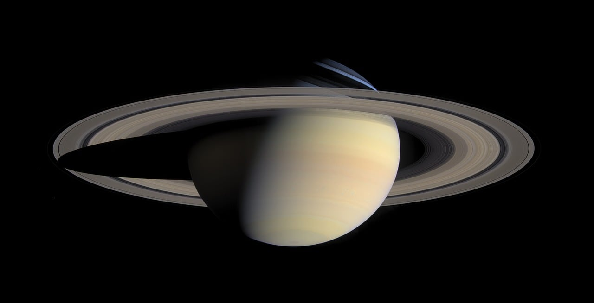

Mercury: The Swift Messenger of the Gods

Mercury is the closest planet to the Sun and is a place of extremes. It has no atmosphere, so temperatures swing wildly from 800°F (427°C) during the day to -290°F (-179°C) at night. This small, rocky planet is covered in craters and zips around the Sun quickly, completing a year in just 88 Earth days. Mercury’s contrasting hot and cold regions make it a fascinating planet.
Venus: Earth's Fiery Twin

Venus is often called Earth’s sister planet because it’s similar in size, but it is very different. It has a thick, toxic atmosphere that traps heat, making it the hottest planet, with temperatures reaching 900°F (475°C). The clouds are made of sulfuric acid, and the surface is hot enough to melt lead. Venus also rotates backward compared to most planets, adding to its mystery.
Earth: The Blue Marble

Earth is our home and the only known planet that supports life. It has a lot of water, covering over 70% of its surface, and has a breathable atmosphere. Earth is full of different climates and ecosystems that make it a dynamic and ever-changing world. Its ability to sustain a wide variety of life forms makes Earth truly unique in the solar system..
Mars: The Red Planet

Mars is famous for its reddish color and has been a subject of human curiosity for a long time. It has dusty landscapes, huge volcanoes, and signs of ancient rivers and lakes, suggesting it might have had water in the past. Mars has a thin atmosphere made mostly of carbon dioxide and continues to be a focus for exploration, with the hope of finding evidence of past life.
Jupiter: The Giant of the Solar System

Jupiter is the largest planet in our solar system and is known for its swirling clouds and the Great Red Spot, a giant storm larger than Earth. It is a gas giant with a powerful magnetic field and dozens of moons, including Ganymede, the largest moon in the solar system. Jupiter’s massive size and dynamic atmosphere make it a fascinating planet to study.
Saturn: The Jewel of the Cosmos
Saturn is easily recognized by its stunning rings made of ice and rock particles. This gas giant is the second-largest planet and is less dense than water, meaning it would float if there was a big enough ocean. Saturn has many moons, including Titan, which has lakes of liquid methane. Its beautiful rings and unique features make Saturn a captivating planet.
Uranus: The Tilted Ice Giant

Uranus is unique because it rotates on its side, leading to extreme seasons. It is an ice giant with a blue-green color due to methane in its atmosphere. Uranus has faint rings and the coldest atmosphere of any planet, despite being far from the Sun. Its unusual tilt and cold environment continue to intrigue astronomers.
Neptune: The Mysterious Blue World

Neptune is the farthest planet from the Sun and is known for its intense storms and strong winds. It is an ice giant with a deep blue color caused by methane. Neptune features the Great Dark Spot, a storm similar to Jupiter’s Great Red Spot, and is home to Triton, a moon with geysers. Neptune remains a mysterious and distant world waiting to be explored.